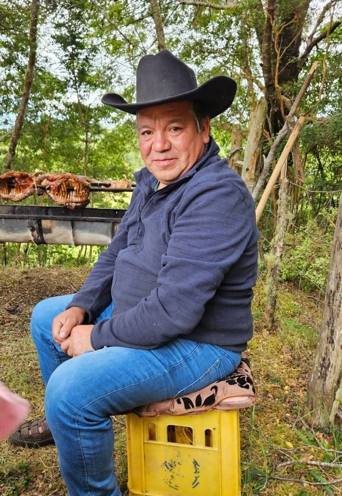

Lelbun, 24 de noviembre de 1975 – 12 de julio de 2025
Marcos Erasmo Mario Rodriguez
Esposo, padre, abuelo, pescador, carpintero y el alma de la fiesta.
Este no es un adiós sino un hasta siempre.

Un hombre perseverante y luchador
Salió adelante junto a su familia, les dio estudios a sus tres hijos y los ayudó a cumplir sus sueños. Esta página reúne su vida, su gente y lo que más amaba.